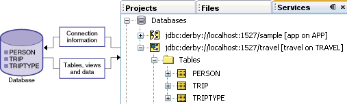

See Also | Tutorials and Javadoc
Use the IDE to connect an external database to your application. First, you must add a connection to the database to the , as described in Adding a Database Connection. It is through this database connection that you communicate with the database. When you add or connect to a database in the Services window, you specify connection information, such as a user name. After you connect, the IDE retrieves the tables in the database as shown in the following diagram.

In your application, you can specify which rows to retrieve from the database connection by writing an SQL query, as described in Creating an SQL Query. The SQL query is sent to the database and returns a collection of data to a component in the page.
Two layers separate the component from the database table.
RowSet layer makes the connection to the
database, executes the queries, and manages the result set. Array objects. Typically, you only work with the RowSet object to set query
parameters. In all other cases, use the data provider to access and
manipulate the data.
To display data in your application, you must bind one or more components in a page to
the data being returned by the data provider associated with the RowSet as described in About Binding Components to Data. Then, you can view and update the data in the database.